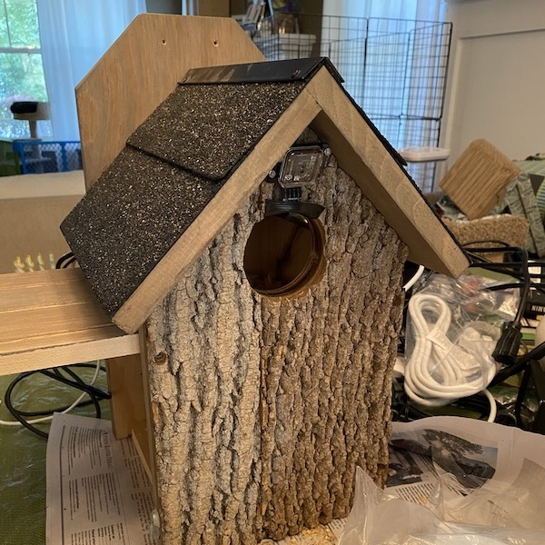
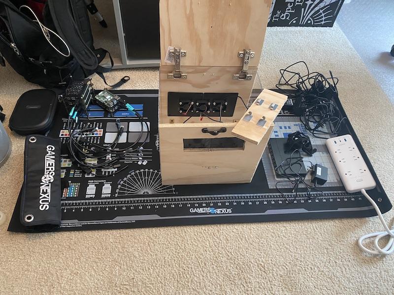
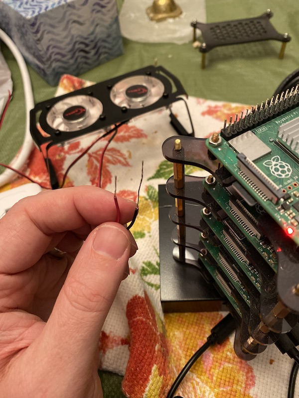
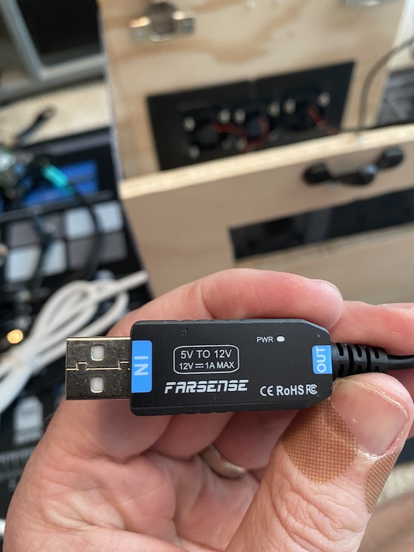
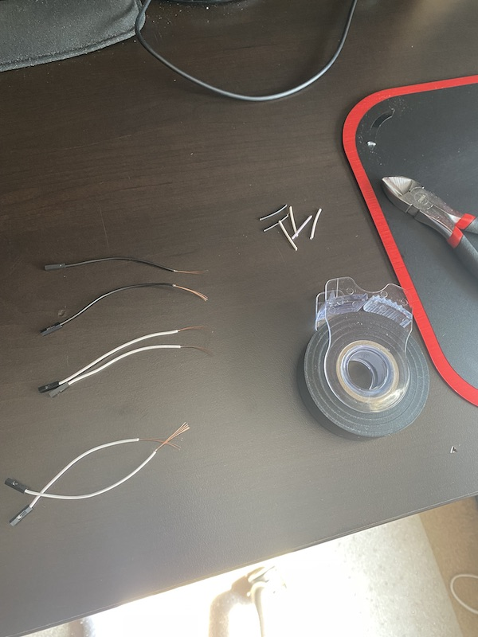
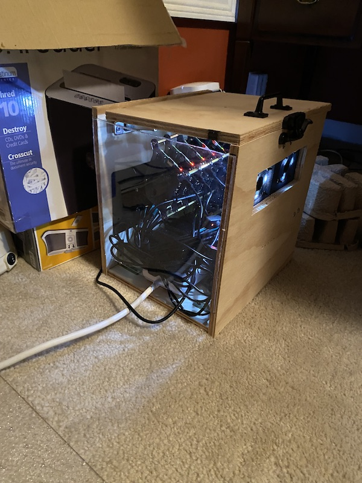
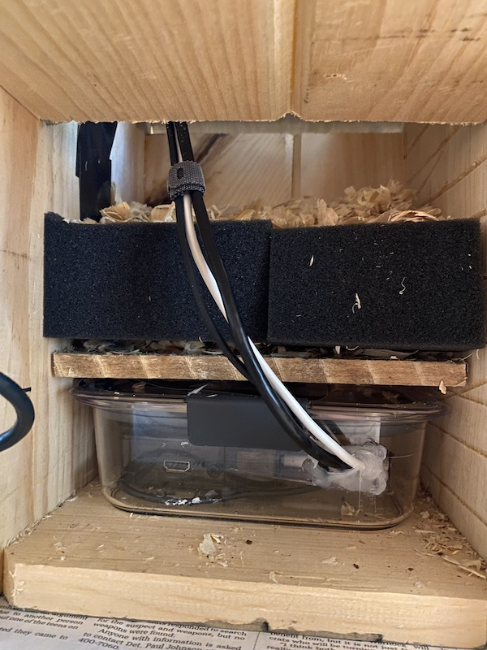
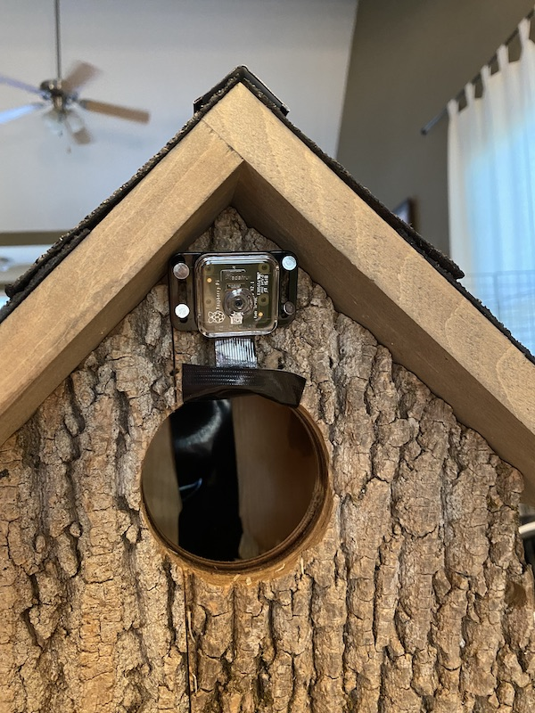

Ha! Thought I’d left for good, didn’t you? Yeah well, I’m back b****es, and I’m here to talk about a little at-home tech project I’ve been working on for the better part of the past year. It comes in multiple parts–so the updates will come in multiple posts!–and it’s still very much a work in progress. But I’ve reached the point where I actually have something interesting to talk about, so I wanted to go ahead and get this party started.
Over a year ago, as intermittent lockdowns dragged on and overall job satisfaction continued to plummet, I was looking for ways to keep my brain busy outside of work (read: to keep from going insane). I had a couple of Raspberry Pis I had ideas for, but which I just hadn’t gotten around to doing anything with, so I did like any good restless tinkerer with both too much and too little time on their hands would do: I went out and bought five more of them, then assembled them into a mini-cluster.
I posted about this a few times on my instagram: first when I’d assembled the Pi cluster, and again when I’d put together a Network Attached Storage (NAS) with 20TB to do my bidding.
Since then, things got busy, but thanks to a two-week staycation in mid-late May of this year, I’ve made significant strides:
- The NAS is still doing its thing, though now it serves as yet another backup of all my research data. Can’t be too paranoid.
- The Pi cluster underwent some major plastic surgery. Turns out, just stacking a bunch of Pis and leaving them around your office isn’t a great setup when toddler wants to smack the s*** out of them.
- I finally put together and deployed my first attempt at an outdoor wildlife camera. Still a ton of work to do, but initial tests have been wildly successful.
The latter two are what I’ve been focusing on over the past few months in particular (the last one is the cover image at the top of this post!). For the second one, I took the approach of trying to make everything as self-contained as possible. When you’re setting up a cluster of Raspberry Pis, there’s a shocking amount of cabling involved, despite what their diminuitive form factors might have you believe: they still need some space, and given the aforementioned toddler, I wanted as much of the full apparatus wrapped in a protective covering as possible.
This was the end result:

The Pi cluster “rack”, the 8-port switch, the power strip, and even a handful of intake/exhaust fans would all be installed inside a homemade “cage”. Only two cables needed to exit the cage: one for the power strip (to go in an outlet), and one for the network (to go in the router). The rest would be protected inside half-inch hobby wood from Home Depot, safely protected by a hinge cover with a handle and a slide lock. For easy viewing, I made a side panel transparent with acrylic (man that was a bitch to cut and adhere), and I even managed to slice out some openings in the front and back to install intake and exhaust fans, just to make absolutely sure the temperatures didn’t get too obscene.
I learned a lot along the way, not the least of which involved wiring, voltage/current/resistence, woodworking, and design.




As for the birdhouse, it also comes with a bit of a surprise. I bought one that was big enough to house its own Raspberry Pi, which I built inside a waterproof/shatterproof plastic container to protect it from the outdoor elements. This is what drives the infrared camera on the front and handles detecting wildlife that walk by.


And I’m definitely not done yet. I still have a LOT of additional testing to run on the capabilities of the infrared camera (you can track my progress at the bleeding edge or even provide suggestions here at the GitHub repo I’ve set up for it), and the actual Raspberry Pi cluster still needs to be spun back up after I reformatted the whole thing to start from scratch.
Ultimately, the goal is to have the Pi cluster act as the processing center, providing all kinds of internal apps for viewing and managing data on the NAS–including photos, videos, and audio, in addition to the wildlife images being captured at night–while the birdhouse is just one component that generates videos for analysis and storage.
I’ll be posting additional updates here as I make progress. Join me, won’t you? :)
Citation
@online{quinn2022,
author = {Quinn, Shannon},
title = {The {Raspberry} {Pi} Cluster},
date = {2022-07-13},
url = {https://magsol.github.io/2022-07-13-the-raspberry-pi-cluster},
langid = {en}
}